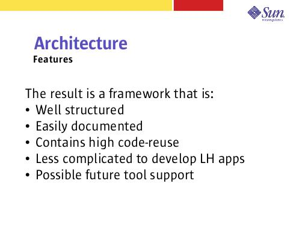

Notes:
Structured: Everything has a place. There is little or no guessing as to where to put code. This results in consistent, well structured code.
Easily documented: XML is easy to read and document. Most application “code” is written in XML.
High code-reuse: No longer a view bean per page, no longer an event method per event... code is reused often.
Less complicated: Development does not require creating an architecture. Development can be broken into roles: assembler (works with the XML), Java programmer (writes handlers for the assembler).
The XML format lends itself well to tools support.